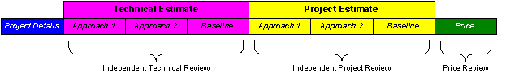

| Artifact: Estimation Report
(ART 0533)
|
|
 |
| This artifacts documents the results of following the estimation process by recording the values of the estimate, along with the approach used in creating it, at each governance point. The estimate itself is created using the standard templates, tools, or models chosen by the project team. |
Domains: Project Management
Work Product Kinds: Record |
|
Purpose
This artifact provides a historical record of the estimates and approaches with traceability and accountability on a
project and can be used as:
-
Basis for comparisons on future estimates and projects
-
Key inputs to improving overall estimating processes
|
Relationships
| Parent Deliverables |
|
| Roles | Responsible:
| Modified By:
|
| Tasks | Input To:
| Output From:
|
Description
| Brief Outline |
This artifact is comprised of the following sections:

-
Project Details:
-
-
Basic project information, such as the project name, sponsor name, and project dates, category, business
sector, and industry
-
Technical Estimate an
-
-
Information relevant to the estimate, including a description of the project scope and solution – useful in
future comparisons across estimates and projects
-
A description of each approach used to estimate the project including estimation tools used, and
assumptions obtained from the selected approach
-
The names of those individuals involved in creating or reviewing the estimate
-
The resulting size, effort, schedule, and resources required to perform the technical work
-
Project Estimate
-
-
Information relevant to the estimate, including a description of the project scope and solution – useful in
future comparisons across estimates and projects
-
A description of each approach used to estimate the project including estimation tools used, and
assumptions obtained from the selected approach
-
The names of those individuals involved in creating or reviewing the estimate
-
The resulting size, effort, schedule, and resources required to perform the technical work
-
The resulting size, effort, schedule, and resources required to perform the non-technical work
-
Price
-
-
The estimated costs and schedule to deliver this project
-
The names of those individuals involved in creating or reviewing the estimate
|
Illustrations
Key Considerations
| Best practices require the use of a minimum of two approaches when estimating. Each approach worksheet documents the
results of a single approach (e.g. use of Function Points or use of a tool). The approach worksheets should be copied if
more are needed. |
Tailoring
| Impact of not having |
Consequences of not having this work product are:
-
Absence of documented estimating techniques that may lead to improper and biased estimates
-
Absence of estimation assumptions that may result in improper risk analysis and impede future planning activities
-
Lack of size estimate that may result in difficulty in planning the project or work request
-
Lack of error or schedule estimate that may lead to improper planning, and result in schedule or budget overruns
-
Lack of a documented baseline against which future project actual results and estimates can be compared
|
| Reasons for not needing | This artifact is highly recommended for use in documenting the estimating techniques, assumptions, and the estimates for
the project or work request. Different formats of the report might be used considering the specific circumstances of
a project. Reasons for not using the guidelines described in this artifact should be documented and approved by
project management. |
More Information
| Checklists |
|
| Guidelines |
|
| Supporting Materials |
|
© Copyright IBM Corp. 1987, 2012 All Rights Reserved
Property of IBM
These materials are intended only for use as part of an IBM engagement |
|